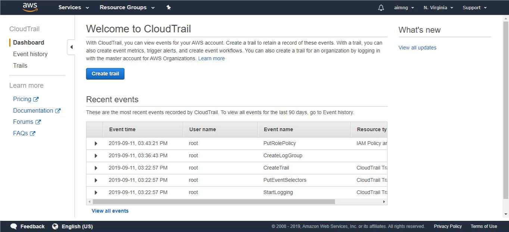
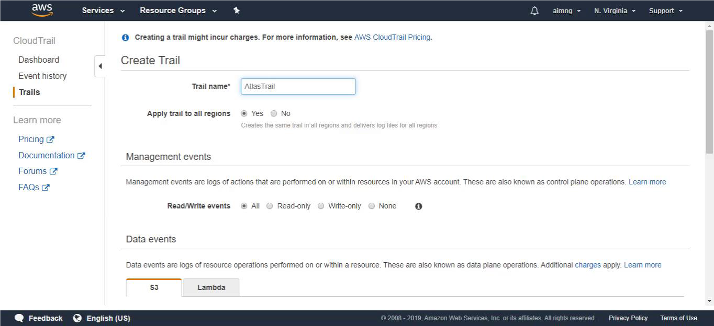
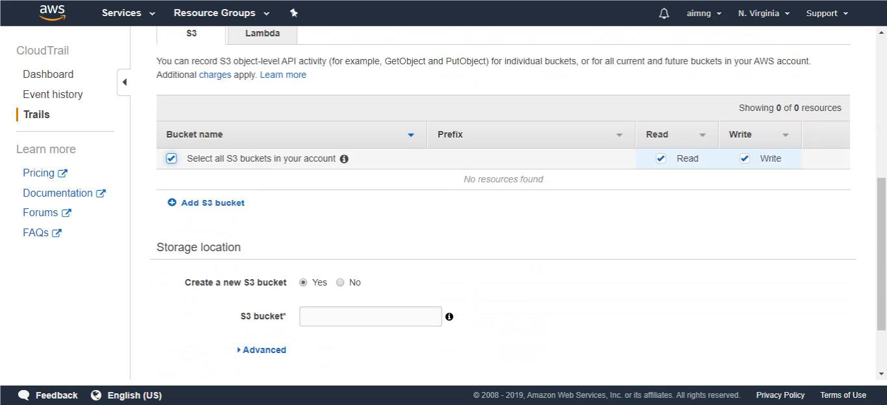
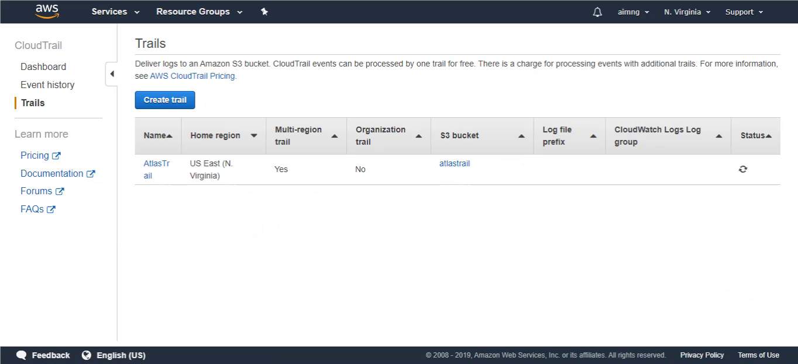
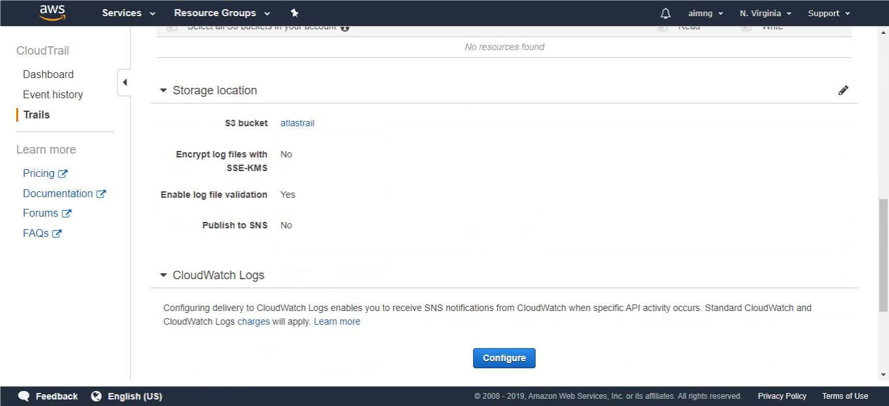
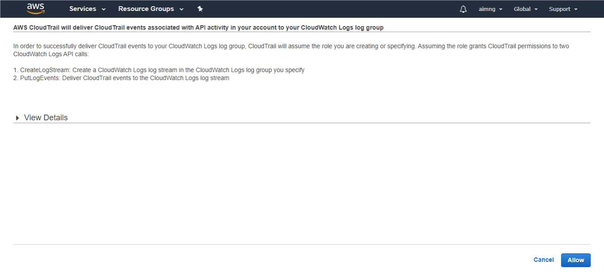

-
1 In the CloudTrail panel, select “Create trail”.
 -
2 Fill in the "Trail name" field.
 -
3 Mark "Select all S3 buckets in your account".
 -
4 Fill in the "S3 bucket" field. The name of the bucket must be unique in S3. Then click on “Create”.

-
5 Click on the name of the trail to edit.
 -
6 Configure CloudWatch Logs.
 -
7 Fill the group name and continue.

-
8 Click on “Allow” to grant CloudTrail permissions.
 -
9 Click on the button shown below, to activate the UTMStack features related to this integration